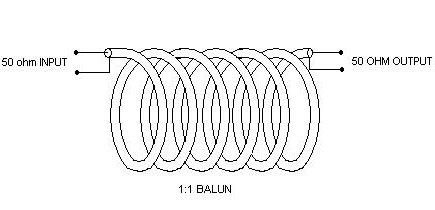
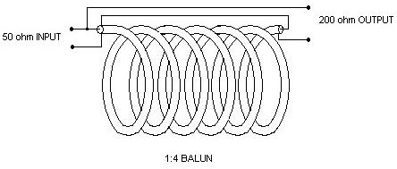
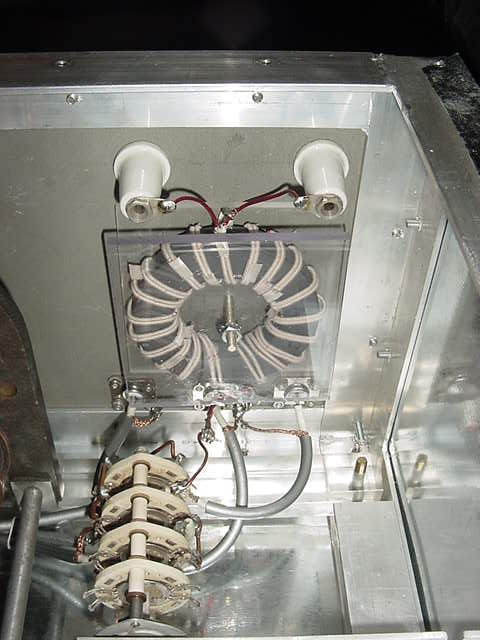

Simple Homebrew BALUNs & UN-UNs
Using Transmission Line Transformer Designs
The following describes several simple baluns that most anyone can make with what they likely have at hand in
the average ham shack. The basic "rules of thumb" are described here to guide you in the design of your own baluns.
But first, some definitions and theory should be understood.
1. "Baluns" is term used to describe BALanced to UNbalanced transformers. However, in today's ham marketing the
term balun is often used to describe almost any RF line transformer. And these baluns may be 1:1, 4:1, or greater ratio, and may be balanced to balanced or unbalanced to unbalanced as well.
The following will described specifically two unbalanced to balanced baluns intended to transform a coaxial (unbalanced) cable feed to a balanced
line or antenna.
2. There are two types of balun construction techniques which are distinctly different, TRANSFORMER type and TRANMISSION LINE types. The functional
differences between the two are very significant and will be described as well. The term "voltage" or "current" balun are also frequently bandied about
with little adequate explanation.
3. It is important to understand what the balun is intended to do and it's limitations. Baluns often get a very bad reputation from hams using them in
various antenna systems. This is mainly because they are being grossly misapplied and will not work well at all when forced to operate significantly
beyond their designed impedance and frequency. However, when applied properly they resolve numerous issues extremely well, are VERY efficient and quite
broad-banded.
The two major types of baluns are the RF Transformer and the Transmission Line Transformer. The first uses conventional
transformer methodology, whereby an input winding(s) is coupled to an output winding(s) solely by means of their induced magnetic fields coupling
through a magnetic medium such as ferrite slugs, rods or toroids. Transformers such as these suffer from several limitations such as
saturation, overheating, inefficiency, high inductive reactance, leakage inductance, etc. Therefore most applications today favor the transmission
line approach which is very different.
MOST IMPORTANT PARAGRAPH!!
Transmission Line Transformers, as you might expect, effectively use transmission lines instead of simple solenoid windings to transfer RF energy
through the balun. By their nature, transmission lines employ two or more lines whereby current and voltages traveling in the line result in
equal and opposite flow in their mating conductors. Since all energy between winding is equal and opposite all external fields are essentially
cancelled out to zero. Whether balanced or unbalanced, this is true of all transmission lines. However, the coupling of this energy occurs through
both magnetic and electrical fields established within the lines. Hence their characteristic impedance is defined and the coupling is also rather
efficient, since no other lossy medium, such as ferrite or powdered iron, is employed.
In their application as a transformer winding, so too is this property utilized to transfer energy between windings. The most significant difference
in this application is that any unbalanced current which may attempt to flow in (on) the windings is utilized in such a manner as to produce an
opposing magnetic field (inductance) in the core so as to choke off or prevent the unbalanced currents from flowing. By this
action, only the initial currents remain flowing, equal and opposite, into the load. Additionally, since the inductive action serves only to choke
off unwanted current, this is a self limiting reaction, and is not required to support the transfer of desired energy. Hence, much smaller ferrites,
or even air (coax balun), can be utilized for core material and the power transfer capability is only limited by the properties of the lines (windings) used.
Lastly, this would be termed a current balun, since the currents flowing are forced to be equal even if the load is not perfectly balanced.
For instance, in the case of a dipole where each arm presents a slightly different impedance, the currents being equal would produce a proportionally
higher voltage on the arm presenting the higher impedance. An Off-Center-Fed dipole would be such a load.
In order for these wonderful properties of the transmission line to be realized at optimum efficiency (98-99%) the impedance of the lines involved
should be matched to its load and source. For a 50 ohm 1:1 balun this is easily accomplished with 50 ohm coax on a toroidal core. In the case of
two different impedances, 4:1 for instance, the impedance of the line should be the geometric mean of the two impedances. This for a 50:200 ohm balun
a 100 ohm line would be desirable. I have found through experimentation that deviation in optimum line impedance produce slightly lossy, but very
usable baluns. This is in stark contrast to deviation in load impedance ratios, especially when highly reactive. Any antenna operated significantly
off resonance will result in very poor performance. This is likely why people attempting to use baluns in non-resoanat antenna systems, especially the
ones placed in antenna tuners, so thoroughly despise baluns. For a good multi-band antenna application employing baluns see my article on
"The Best Antenna"
A question often asked is what detemines the type of winding used? Why are some twisted bifilar, some coax and some just parallel magnet wire? The
application of different types of winding largely depends on what line impedance is required. Next, current and voltage handling ability must be
considered. For low impedance lines parallel lines held closely together and tightly wound on a toroid can produce excellent response. When this
approach is applied to binocular cores it becomes difficult to keep the windings tight to the core and imbalances can occur. In this instance
twisting the wires helps to equalize these errors. For very low impedance lines even flat "stripline"conductors seperated by an insulating dielectric
can produce very low impedance lines. In the example of a 50:12.5 ohm 4:1 Un-un (cited below) I use two 50 ohm coaxial lines in parallel to achieve
a 25 ohm winding. With whatever type of line is used the characteristic impedance of the line is determined as it would be were it not wound on a
core. Using the well known equations for coaxial or open wire line one should be able to make a line to meet their specific needs. There are several
ways to skin this cat which can be further clarified in the texts cited above.
Other than air cores, the choice of ferrites is vast, in reviewing the advertised properties of
ferrites it should be relatively easy to determine what cores might be applicable. Since this is beyond the scope of this brief article I will simply
say that for 2-30 MHz operation I use #43 mix cores and 30-100 MHz I use #77 mix. These are Amidon numbers readily cross referenced to other
manufacturers.
The rule of thumb however for determining the number of windings is that the resulting inductance of the windings should be 10 times the higher
impedance at the lowest operating frequency. This can be calculated easily from the AL given for the core used or inductance formulas for basic single
layer solenoid type coils. For example; a 50 ohm 1:1 balun operating from 160-10 meters should have an inductive reactance of 500 ohms at 1.8 MHz.
Below are two schematic examples of such baluns and a photograph of a 4:1 high power balun in my antenna tuner wound with 100 ohm line made from magnet
wire.



1:4 High Power Balun, Q1 Ferrite, 100 ohm winding
Another wonderful example of an Unbabalnced-Unbalanced design for mobile use is described here Lo-Z Mobile Matching UN-UN